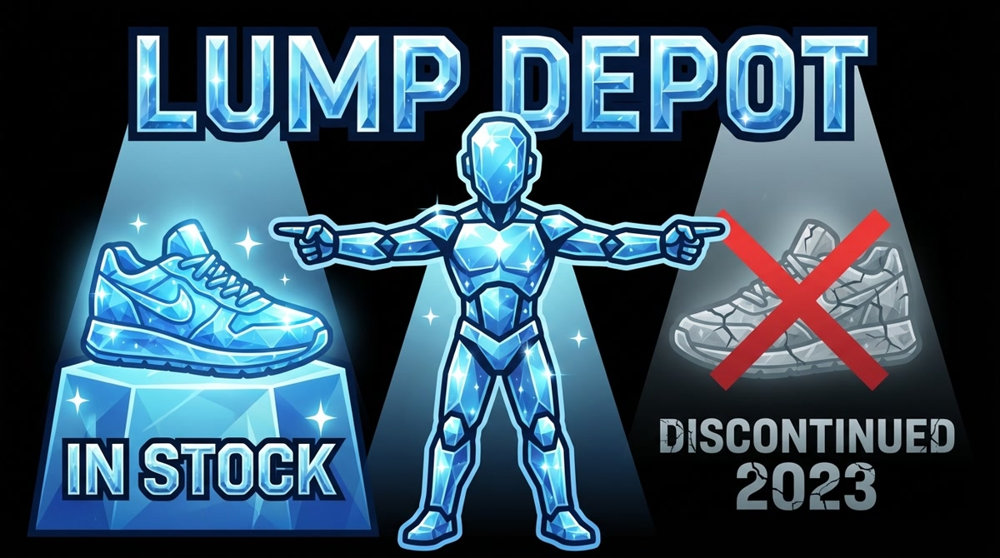

I shared a skill with a friend yesterday. It runs a quiz to figure out your 90s band. That's the whole thing. You answer a few questions, and you land on one result from a fixed set.
It sounds like a Buzzfeed quiz. It kind of is. But the way it works is what I actually wanted him to see.
A branching tree in disguise
The skill is a decision tree. Each question narrows the path. If you name a band you like early, that's your answer right there. If you keep dodging, the questions keep branching, but you always end up at exactly one result.
I got Beck, which fits me a little too well. He got the Cranberries in three questions. The LLM runs the whole thing. It asks, listens, routes you. You don't see any branching logic. You just answer until you land somewhere.
There's a demo skill at dsoul.org if you want to try it.
The real use case is shopping
That quiz is a proof of concept. The actual point is something like this: say you have 40 pairs of sneakers in inventory. A customer tells the LLM: "Help me pick out sneakers." The LLM runs the skill. It asks about fit, style, use case. It routes through the tree and lands on one pair from your actual stock.
Not a suggestion from training data. Not a product that was discontinued in 2023. One specific item you actually have.
That's a meaningful difference. When you ask a general-purpose LLM to recommend something, it pulls from what it knows about the world, which may or may not match what's on the shelf today. A skill built around real inventory doesn't have that problem. It only offers what exists.
The sponsored personal assistant
This is a new kind of business model hiding in plain sight.
Right now, if you ask an LLM to help you shop at a specific grocery store, you'll get a generic answer based on training data. Helpful enough, but it doesn't know what that store has this week, what's on sale, or what's actually in stock at your location.
A store-specific skill fixes that. It's inventory-aware. When you say "help me get everything I need for Thanksgiving dinner from Shop Rite," it can do that for real. The LLM is the interface. The skill is the sponsored layer underneath, connected to the actual catalog.
The brand builds the skill. The skill knows the brand's real inventory. The customer gets an actionable answer, not just an answer.
That's the distinction
There's a difference between "here are some good options" and "here is the one you should get, and it's in stock." A general LLM gives you the first. A well-built skill gives you the second.
I have some products at work that need a lot of configuration before you can order them. I want to try building a skill for that next. You answer the questions, it narrows things down, and at the end you get the exact SKU that fits your situation.
You want an actionable answer, not just an answer. That's what a skill connected to real inventory unlocks.
tl;dr: Skills can be inventory-aware shopping assistants. The LLM runs the interview, the skill routes you to a real product that's actually available. It's a better model than hoping training data knows what's on the shelf. The brands that build this first will have a real head start.